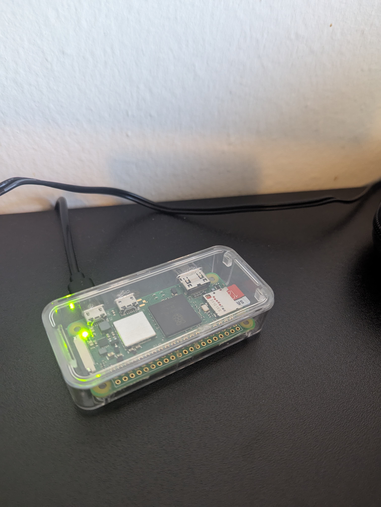

Hey WindBorne, I'm Arnold!
Below was my attempt to host a static website accessible from outside my local network. However, when setting a NAT forwarding on the router, I realized that my router WAN IP is private, and therefore, I would need to access the upstream NAT device to set the port forwarding.
However, this is not possible to do, since I live in an apartment building where I do not have access to the main router for access purposes. I'll therefore host this page on a GitHub page and copy (below) the content of my static website (as it appears when I run it locally). I hope you'll understand my situation and determination to complete this task despite the obstacle I faced. Thank you.

This static webpage is hosted on a Raspberry Pi Zero 2 W, shown in the image above, which I access through SSH.
My Setup
- Installed Apache server using the command sudo apt-get install apache2.
- Set my port number to listen on 13542 (just to avoid conflicts with the most popular/default port number 80).
- Edited
/var/www/html/index.html to write the content of this webpage.